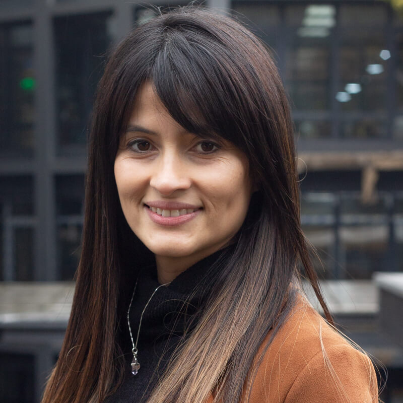
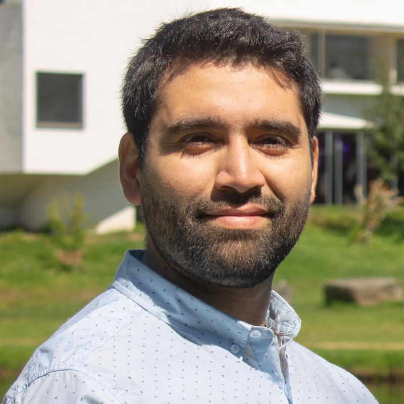
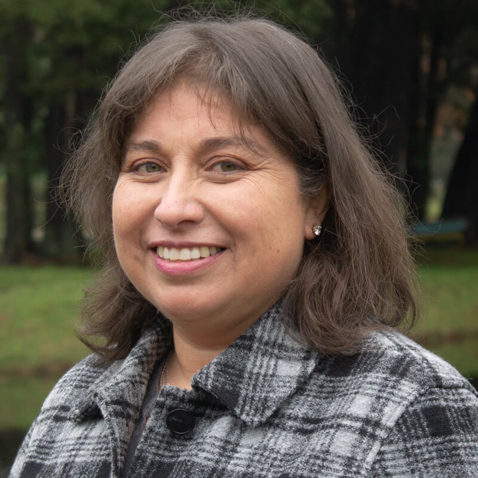

Docentes

Maria Constanza Uribe Sandoval
Diseñadora MultimediaCJP10-220Fabiola Castro Sepulveda
Secretaria CINAPCJP11-250Felipe Bello Poblete
Diseñor Multimedia CJP10-220Gema Pascual Hoyuelos
Asesora Pedagogica CSF05-302Georgina Durán Jiménez
Asesora Pedagogica CJP11-250Jorge Yañez Sepulveda
Asesor Pedagogico / Unidad CJP11-325Juan Maripillan Muñoz
Administrados de plataformasCJP11-335Eileen Makarena Pardo Alvarado
Asesora Pedagogica CJP11-250Mariel Soto Riveros
Asesora PedagogicaCJP11-250Monica Kaechele Obreque
Academica- Directora CJP11-320
Ricardo Garcia HormazabalCJP11-250
Rocio Cristi Gomzalez
Asesora Pedagogica CJP04-107Rodrigo Moya Sobarzo
Asesor Pedagogico / Unidad CJP11-325
Sebastián Garrido Reyes
Seguimiento / Unidad de Estudio CJP11-325Sergio Sanhueza Jara
Asesor Pedagogico CJP11-335